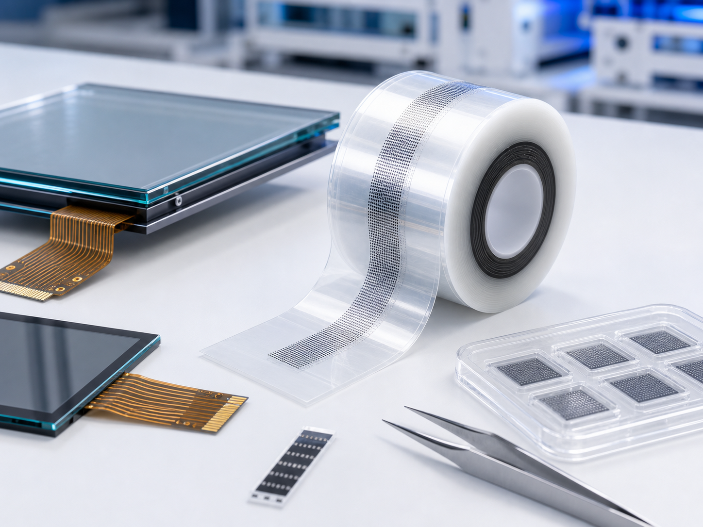
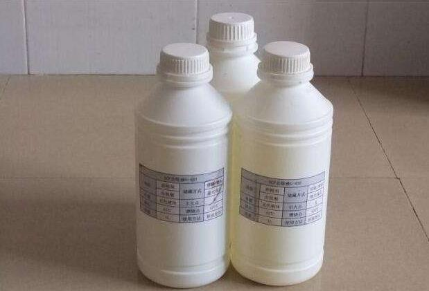
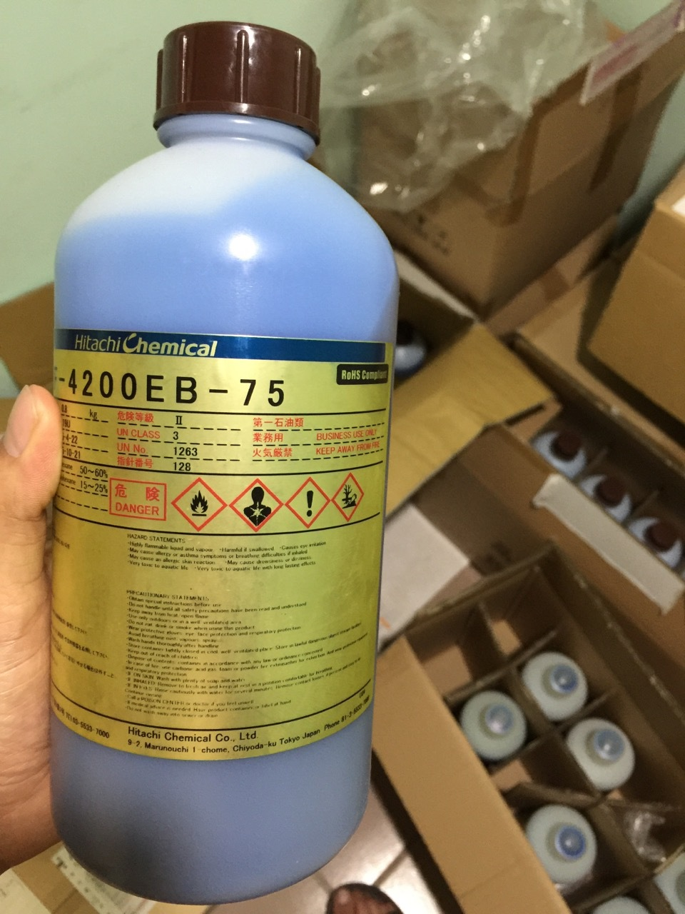

ACF 去除液
适合 TP 触摸屏产品返工，用于处理绑定后残留 ACF 胶和局部返修清洁。材料具有一定腐蚀性，操作时需要穿戴手套等防护用具，避免与皮肤和眼睛接触。
Rework Materials
用于 TP 产品返工、模组 IC 固化 ACF 清洁、残胶处理和蓝胶制程耗材配套，适合绑定异常后的返修清洁场景。

适合 TP 触摸屏产品返工，用于处理绑定后残留 ACF 胶和局部返修清洁。材料具有一定腐蚀性，操作时需要穿戴手套等防护用具，避免与皮肤和眼睛接触。
如皮肤不小心接触，请用清水清洗；如进入眼睛应立即用水清洗并到医院处理。夏天打开盖子时需慢慢开启，避免内部气体突出现象。
使用后应密封，并保管在黑暗阴凉处；使用场所应保持局部换气。药剂上不含有害物质，但含 BOD、SS、PH 等指标，废液不要直接向水排放。
模组厂用于去除 IC 上沾粘的固化 ACF，需要在专门制定的仪器内使用，同样具有一定腐蚀性，应按照现场安全规范操作。
可提供日立 Hitachi 蓝胶 TF4200EB-75 等材料咨询，用于相关制程保护、辅助固定或返修配套场景。


Ready to quote
联系 黄工，提供结构、型号、胶宽、卷长和应用场景，我们会尽快协助确认。